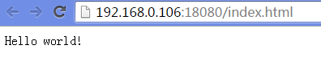

| 名称 | 版本 |
|---|---|
| 宿主机OS | ubuntu-14.04.3-server-amd64 |
| JDK | 7 |
| tomcat | 7.0.52 |
docker version
使用ssh客户端工具登录 ，具体参考http://jingyan.baidu.com/article/9c69d48fb9fd7b13c8024e6b.html
安装openssh
sudo apt-get update
sudo apt-get install openssh-server 获取镜像到本地
sudo docker pull bobsha/ping 这里bobsha是我docker hub的用户名bobsha/ping是我之前上传到一个安装了ping命令的Ubuntu镜像。
当然也可以自己申请一个帐号进行管理，网址为https://hub.docker.com
查看本地镜像信息
sudo docker images 本步骤是将docker容器需要用到的安装软件和tomcat运行的项目在宿主机上准备好，容器中进行挂载。
首先将软件准备好放在宿主机/opt/software下面，在容器中/mnt下面增加software目录。
在宿主机/opt中建立/opt/webapps/ROOT，并添加index.html文件，加入如下内容：
<html>
<body>Hello world!</body>
</html>
docker run -i -t -v /opt/software/:/mnt/software/ 8ab8 /bin/bash 命令包含以下三个部分：
docker run
其中，相关参数包括：
-i：表示以“交互模式”运行容器初始命令>镜像>相关参数>
-t：表示容器启动后会进入其命令行
-v：表示需要将本地哪个目录挂载到容器中，格式：-v : 经过上面的步骤现在已经进入容器的交互式窗口中，将tomcat和jdk解压到/opt目录中，并编写tomcat启动脚本。容器目录>宿主机目录>
在/opt下面建立runtomcat.sh文件，加入如下内容：
#!/bin/bash
export JAVA_HOME=/opt/jdk1.7.0_76/
export PATH=$JAVA_HOME/bin:$PATH
sh /opt/apache-tomcat-7.0.52/bin/catalina.sh run给脚本赋予权限
chmod u+x /opt/runtomcat.sh 退出容器
exit 查看最近运行容器信息
docker ps -l root@ubuntu:/opt/software# docker ps -l
CONTAINER ID IMAGE COMMAND CREATED STATUS PORTS NAMES
23d53a7745bc bobsha/ping:latest “/bin/bash” About a minute ago Exited (0) 12 seconds ago backstabbing_lumiere
保存容器为新镜像，我将新镜像命名为bobsha/tomcat
docker commit 23d5 bobsha/tomcat 这里容器ID只需要写前几位可以区分就行一般，三到四位即可。
运行tomcat，这次只运行启动tomcat命令
docker run -p 18080:8080 -v /opt/webapps/:/opt/apache-tomcat-7.0.52/webapps/ -name docker_tomcat bobsha/tomcat /opt/runtomcat.sh其中，新出现的相关参数包括：
-p：:，将容器端口映射为指定宿主机端口，通过宿主机端口进行访问容器程序容器端口>宿主机端口>
-name:容器名称，起个有意义的名字即可
验证tomcat运行情况
通过局域网中浏览器访问: http://192.168.0.106:18080/index.html显示成功！

Ctrl+C退出后，发现再次运行上面的命令显示如下：
Warning: '-name' is deprecated, it will be replaced by '--name' soon. See usage.
FATA[0000] Error response from daemon: Conflict. The name "docker_tomcat" is already in use by container bab14ef39b40. You have to delete (or rename) that container to be able to reuse that name.查看所有容器
docker ps -a
CONTAINER ID IMAGE COMMAND CREATED STATUS PORTS NAMES
bab14ef39b40 bobsha/tomcat:latest "/opt/runtomcat.sh" 10 minutes ago Exited (130) 8 minutes ago docker_tomcat 移除该容器
docker rm bab1 本文参考以下文章及教程：
http://www.docker.org.cn/book/docker.html
http://m.oschina.net/blog/616526?hmsr=toutiao.io&utm_medium=toutiao.io&utm_source=toutiao.io